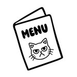
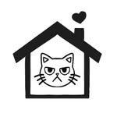

Veja os gatos no café e no perfil oficial. A disponibilidade muda.
Cat café · Liberdade · São Paulo
Café bom.
Gatos donos
do lugar.
Cafés, comidas e companhia felina em um só endereço. Você escolhe o pedido. Os gatos escolhem se vão ligar.
Edifício Houra, 1º andarTer–dom, 11h–18h30Sem reservas
NÃO
FAZEMOS
RONROM
POR PEDIDOMascote em traço
inspirado na casa
FAZEMOS
RONROM
POR PEDIDOMascote em traço
inspirado na casa
Prazer, humanos
Um café.
Vários chefes.
O Angry Cat junta cafeteria, comidas e bebidas com a companhia de gatos resgatados. Um lugar na Liberdade para fazer uma pausa e deixar os felinos conduzirem a conversa — no ritmo deles.
Fica no primeiro andar do Edifício Houra, na Rua Galvão Bueno. Venha pelo cardápio; fique porque alguém resolveu se sentar perto de você.
Convivência felinaRespeite o espaço e o tempo de cada gato.
Adoção responsável
Talvez alguém escolha você.
Um diretório especializado informa que os gatos residentes são resgatados e podem ser adotados. Não localizamos um formulário ou processo oficial verificável nos canais públicos consultados.
Quer adotar? Fale com a equipe e peça o formulário atualizado, requisitos e etapas.
Nomes, perfis e disponibilidade não foram publicados sem confirmação do café.
Peça o formulário e confirme como manifestar interesse.
Confirme requisitos, avaliação, contato e eventuais custos.
Retratos sem invenção
Os gatos são os artistas.
Perfis precisam de fotos atuais e dados aprovados. Por enquanto, deixamos o espaço deles com quem pode mostrar os gatos de verdade.
inventados.

Instagramda casa.

Disponibilidademuda.
As ilustrações são elementos gráficos, não retratos dos gatos. Consulte o perfil oficial e confirme quem está disponível.
Ver Instagram oficial ↗* Itens marcados podem ser pedidos quentes ou gelados.“Agridoc(e)” mantido como no material; confirme a grafia.
Apareça por aqui
A casa é dos gatos. O endereço é seu.
No Edifício Houra — não na Galeria Imperial, que fica nas proximidades.
EndereçoEdifício Houra · Rua Galvão Bueno, 387
Sala 1, 1º andar · Liberdade
São Paulo — SP · CEP 01506-000
Sala 1, 1º andar · Liberdade
São Paulo — SP · CEP 01506-000
Funcionamento
SegundaFechadoTerça a domingo11h–18h30
ReservasNão fazemos reservas.
Telefone / WhatsApp(11) 98864-4660
Instagram@angrycatcoffeeshop
Fotos e opiniões recentes?
Buscar o café no Maps ↗Seu próximo café na Liberdade